CAN Communication System Terminals of ECU |
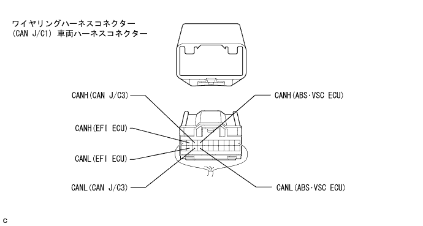
| Connection Destination | Terminal No. | Wire Color [H/L] |
|---|---|---|
| ABS & Traction Actuator Assembly (VSC ECU) | 8 | R (Red) [CANH] |
| 19 | W (White) [CANL] | |
| Wiring Harness Connector (CAN J/C3) | 9 | Y (Yellow) [CANH] |
| 20 | W (White) [CANL] | |
| Engine Control Computer (EFI ECU) | 10 | B (Black) [CANH] |
| 21 | W (White) [CANL] |
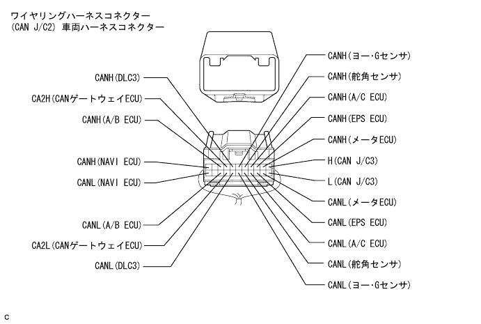
| Connection Destination | Terminal No. | Wire Color [H/L] |
|---|---|---|
| Wiring Harness Connector (CAN J/C3) | 1 | GR (Gray) [H] |
| 12 | W (White) [L] | |
| Combination Meter Assembly (Meter ECU) | 2 | G (Green) [CANH] |
| 13 | W (White) [CANL] | |
| Power Steering Computer Assembly (EPS ECU) | 3 | SB (Sky Blue) [CANH] |
| 14 | W (White) [CANL] | |
| Air Conditioning Amplifier Assembly (A/C ECU) | 4 | V (Violet) [CANH] |
| 15 | W (White) [CANL] | |
| Steering Sensor (Steering Angle Sensor) | 5 | BR (Brown) [CANH] |
| 16 | W (White) [CANL] | |
| Yaw Rate Sensor (Yaw/G Sensor) | 6 | L (Blue) [CANH] |
| 17 | W (White) [CANL] | |
| DLC3 | 7 | LG (Light Green) [CANH] |
| 18 | W (White) [CANL] | |
| Network Gateway Computer (CAN Gateway ECU) | 8 | P (Pink) [CA2H] |
| 19 | W (White) [CA2L] | |
| Airbag Sensor Assembly (A/B ECU) | 9 | Y (Yellow) [CANH] |
| 20 | W (White) [CANL] | |
| Navigation Receiver Assembly (NAVI ECU) | 11 | O (Orange) [H] |
| 22 | W (White) [L] |
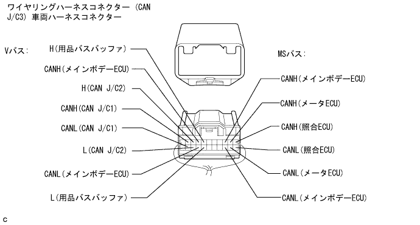
| Connection Destination | Terminal No. | Wire Color [H/L] |
|---|---|---|
| Accessory Bus Buffer | 7 | B (Black) [H] |
| 18 | W (White) [L] | |
| Instrument Panel Junction Block Assembly (Main Body ECU) | 8 | R (Red) [CANH] |
| 19 | W (White) [CANL] | |
| Wiring Harness Connector (CAN J/C2) | 9 | GR (Gray) [H] |
| 20 | W (White) [L] | |
| Wiring Harness Connector (CAN J/C1) | 10 | B (Black) [CANH] |
| 21 | W (White) [CANL] |
| Connection Destination | Terminal No. | Wire Color [H/L] |
|---|---|---|
| Smart Key Computer Assembly (Certification ECU) | 1 | SB (Sky Blue) [CANH] |
| 12 | W (White) [CANL] | |
| Combination Meter Assembly (Meter ECU) | 2 | G (Green) [CANH] |
| 13 | W (White) [CANL] | |
| Instrument Panel Junction Block Assembly (Main Body ECU) | 3 | R (Red) [CANH] |
| 14 | W (White) [CANL] |
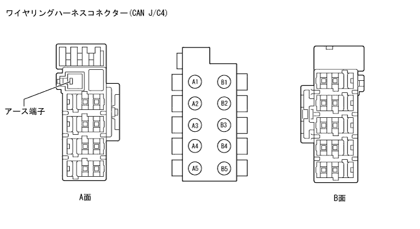
| Connection Destination | Terminal No. | Wire Color [H/L] |
|---|---|---|
| 4WD Computer Assembly (4WD ECU) | A2 | L (Blue) [CANH] |
| W (White) [CANL] | ||
| Network Gateway Computer (CAN Gateway ECU) | A3 | B (Black) [CANH] |
| W (White) [CANL] | ||
| Distance Control Computer (ACC ECU) | A4 | R (Red) [CANH] |
| W (White) [CANL] | ||
| Television Camera Controller (IPA ECU) | A5 | GR (Gray) [CANH] |
| W (White) [CANL] | ||
| Seat Belt Control Computer (Pre-crash ECU) | B5 | R (Red) [CANH] |
| W (White) [CANL] |
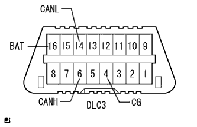 |
Terminals of ECU
| Terminal No. | Terminal Symbol |
|---|---|
| 4 | CG |
| 6 | CANH |
| 14 | CANL |
| 16 | BAT |
Inspect DLC3
Turn IG OFF.
Using the SST (Toyota electrical tester), measure the resistance between each terminal.
| Terminal No. (Terminal Symbol) | Condition | Standard |
|---|---|---|
| 6(CANH) ←→ 14(CANL) | IG OFF (Communication Stopped) | 54 to 69 Ω |
| 6(CANH) ←→ 16(BAT) | IG OFF (Communication Stopped) | 6 kΩ or higher |
| 14(CANL) ←→ 16(BAT) | IG OFF (Communication Stopped) | 6 kΩ or higher |
| 6(CANH) ←→ 4(CG) | IG OFF (Communication Stopped) | 200 Ω or higher |
| 14(CANL) ←→ 4(CG) | IG OFF (Communication Stopped) | 200 Ω or higher |
Terminals of ECU
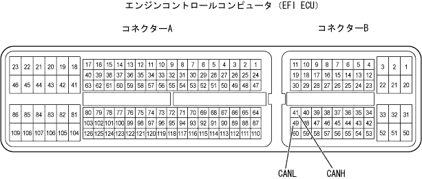
| Terminal No. | Terminal Symbol |
|---|---|
| B41 | CANH |
| B49 | CANL |
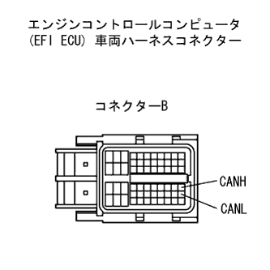 |
Engine Control Computer (EFI ECU) Vehicle Harness Inspection
With the IG OFF, disconnect the engine control computer (EFI ECU) connector.
Using the SST (Toyota electrical tester), inspect the resistance between each terminal of the vehicle harness connector.
| Terminal No. (Terminal Symbol) | Condition | Standard |
|---|---|---|
| B41(CANH) ←→ B49(CANL) | IG OFF (Communication Stopped) | 108 to 132 Ω |
| B41(CANH) ←→ GND | IG OFF (Communication Stopped) | 200 Ω or higher |
| B49(CANL) ←→ GND | IG OFF (Communication Stopped) | 200 Ω or higher |
| B41(CANH) ←→ +B | IG OFF (Communication Stopped) | 6 kΩ or higher |
| B49(CANL) ←→ +B | IG OFF (Communication Stopped) | 6 kΩ or higher |
Terminals of ECU
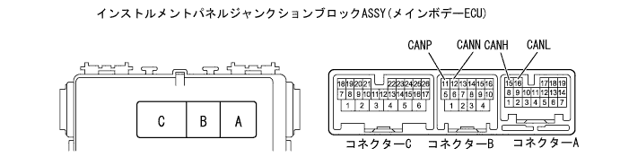
| Terminal No. | Terminal Symbol |
|---|---|
| A15 | CANH (V bus branch line) |
| A16 | CANL (V bus branch line) |
| B11 | CANP (MS bus main line) |
| B12 | CANN (MS bus main line) |
Instrument Panel Junction Block Assembly (Main Body ECU) Vehicle Harness Inspection (V Bus Branch Line)
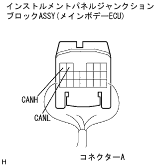 |
Turn the IG OFF and disconnect connector A of the main body ECU (vehicle front side).
Using the SST (Toyota electrical tester), measure the resistance between each terminal of the vehicle harness connector.
| Terminal No. (Terminal Symbol) | Condition | Standard |
|---|---|---|
| A15(CANH) ←→ A16(CANL) | IG OFF (Communication Stopped) | 54 to 69 Ω |
| A15(CANH) ←→ GND | IG OFF (Communication Stopped) | 200 Ω or higher |
| A16(CANL) ←→ GND | IG OFF (Communication Stopped) | 200 Ω or higher |
| A15(CANH) ←→ +B | IG OFF (Communication Stopped) | 6 kΩ or higher |
| A16(CANL) ←→ +B | IG OFF (Communication Stopped) | 6 kΩ or higher |
Instrument Panel Junction Block Assembly (Main Body ECU) Vehicle Harness Inspection (MS Bus Main Line)
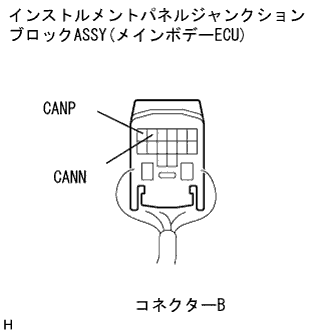 |
Turn the IG OFF and disconnect connector B of the main body ECU (vehicle front side).
Using the SST (Toyota electrical tester), measure the resistance between each terminal of the vehicle harness connector.
| Terminal No. (Terminal Symbol) | Condition | Standard |
|---|---|---|
| B11(CANP) ←→ B12(CANN) | IG OFF (Communication Stopped) | 108 to 132 Ω |
| B11(CANP) ←→ GND | IG OFF (Communication Stopped) | 200 Ω or higher |
| B12(CANN) ←→ GND | IG OFF (Communication Stopped) | 200 Ω or higher |
| B11(CANP) ←→ +B | IG OFF (Communication Stopped) | 6 kΩ or higher |
| B12(CANN) ←→ +B | IG OFF (Communication Stopped) | 6 kΩ or higher |
Terminals of ECU
| Terminal No. | Terminal Symbol |
|---|---|
| 27 | CANH (V bus main line) |
| 28 | CANL (V bus main line) |
| 13 | TX- (MS bus main line) |
| 14 | TX1- (MS bus main line) |
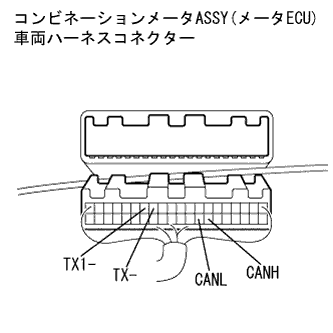 |
Combination Meter Assembly (Meter ECU) Vehicle Harness Inspection
Turn the IG OFF and disconnect the combination meter assembly (meter ECU) connector.
Using the SST (Toyota electrical tester), measure the resistance between each terminal of the vehicle side wire harness connector.
| Terminal No. (Terminal Symbol) | Condition | Standard |
|---|---|---|
| 27(CANH) ←→ 28(CANL) | IG OFF (Communication Stopped) | 108 to 132 Ω |
| 27(CANH) ←→ GND | IG OFF (Communication Stopped) | 200 Ω or higher |
| 28(CANL) ←→ GND | IG OFF (Communication Stopped) | 200 Ω or higher |
| 27(CANH) ←→ +B | IG OFF (Communication Stopped) | 6 kΩ or higher |
| 28(CANL) - +B | IG OFF (Communication Stopped) | 6 kΩ or higher |
| Terminal No. | Condition | Standard |
|---|---|---|
| 14(TX1-) ←→ 13(TX-) | IG OFF (Communication Stopped) | 108 to 132 Ω |
| 14(TX1-) ←→ GND | IG OFF (Communication Stopped) | 200 Ω or higher |
| 13(TX-) ←→ GND | IG OFF (Communication Stopped) | 200 Ω or higher |
| 14(TX1-) ←→ +B | IG OFF (Communication Stopped) | 6 kΩ or higher |
| 13(TX-) ←→ +B | IG OFF (Communication Stopped) | 6 kΩ or higher |
Terminals of ECU
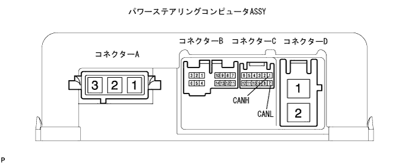
| Terminal No. | Terminal Symbol |
|---|---|
| C1 | CANH |
| C7 | CANL |
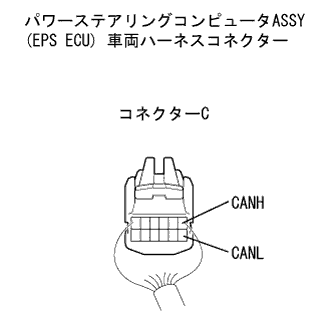 |
Power Steering Computer (EPS ECU) Vehicle Harness Inspection
Turn the IG OFF and disconnect connector C of the power steering computer (EPS ECU).
Using the SST (Toyota electrical tester), measure the resistance between each terminal of the vehicle harness connector.
| Terminal No. (Terminal Symbol) | Condition | Standard |
|---|---|---|
| C1(CANH) ←→ C7(CANL) | IG OFF (Communication Stopped) | 54 to 69 Ω |
| C1(CANH) ←→ GND | IG OFF (Communication Stopped) | 200 Ω or higher |
| C7(CANL) ←→ GND | IG OFF (Communication Stopped) | 200 Ω or higher |
| C1(CANH) ←→ +B | IG OFF (Communication Stopped) | 6 kΩ or higher |
| C7(CANL) ←→ +B | IG OFF (Communication Stopped) | 6 kΩ or higher |
Terminals of ECU
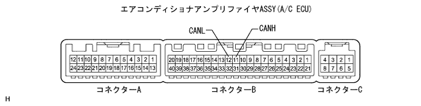
| Terminal No. | Terminal Symbol |
|---|---|
| B11 | CANH |
| B12 | CANL |
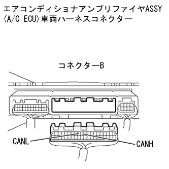 |
Air Conditioner Amplifier Assembly (A/C ECU) Vehicle Harness Inspection
Turn the IG OFF and disconnect connector B of the air conditioner amplifier assembly (A/C ECU).
Using the SST (Toyota electrical tester), measure the resistance between each terminal of the vehicle harness connector.
| Terminal No. (Terminal Symbol) | Condition | Standard |
|---|---|---|
| B11(CANH) ←→ B12(CANL) | IG OFF (Communication Stopped) | 54 to 69 Ω |
| B11(CANH) ←→ GND | IG OFF (Communication Stopped) | 200 Ω or higher |
| B12(CANL) ←→ GND | IG OFF (Communication Stopped) | 200 Ω or higher |
| B11(CANH) ←→ +B | IG OFF (Communication Stopped) | 6 kΩ or higher |
| B12(CANL) ←→ +B | IG OFF (Communication Stopped) | 6 kΩ or higher |
Terminals of ECU
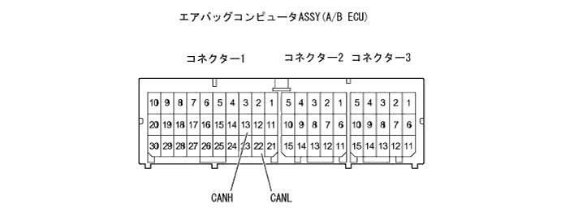
| Terminal No. | Terminal Symbol |
|---|---|
| 1-13 | CANH |
| 1-22 | CANL |
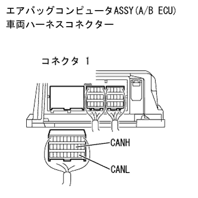 |
Airbag Computer Assembly (A/B ECU) Vehicle Harness Inspection
Turn the IG OFF and disconnect connector 1 of the airbag computer assembly (A/B ECU).
Using the SST (Toyota electrical tester), measure the resistance between each terminal of the vehicle harness connector.
| Terminal No. (Terminal Symbol) | Condition | Standard |
|---|---|---|
| 1-13(CANH) ←→ 1-22(CANL) | IG OFF (Communication Stopped) | 54 to 69 Ω |
| 1-13(CANH) ←→ GND | IG OFF (Communication Stopped) | 200 Ω or higher |
| 1-22(CANL) ←→ GND | IG OFF (Communication Stopped) | 200 Ω or higher |
| 1-13(CANH) ←→ +B | IG OFF (Communication Stopped) | 6 kΩ or higher |
| 1-22(CANL) ←→ +B | IG OFF (Communication Stopped) | 6 kΩ or higher |
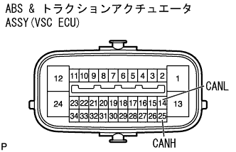 |
Terminals of ECU
| Terminal No. | Terminal Symbol |
|---|---|
| 25 | CANH |
| 14 | CANL |
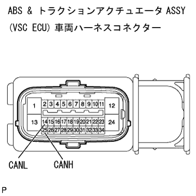 |
ABS & Traction Actuator Assembly (VSC ECU) Vehicle Harness Inspection
Turn the IG OFF and disconnect the ABS & traction actuator assembly (VSC ECU) connector.
Using the SST (Toyota electrical tester), measure the resistance between each terminal of the vehicle harness connector.
| Terminal No. (Terminal Symbol) | Condition | Standard |
|---|---|---|
| 25(CANH) ←→ 14(CANL) | IG OFF (Communication Stopped) | 54 to 69 Ω |
| 25(CANH) ←→ GND | IG OFF (Communication Stopped) | 200 Ω or higher |
| 14(CANL) ←→ GND | IG OFF (Communication Stopped) | 200 Ω or higher |
| 25(CANH) ←→ B+ | IG OFF (Communication Stopped) | 6 kΩ or higher |
| 14(CANL) ←→ B+ | IG OFF (Communication Stopped) | 6 kΩ or higher |
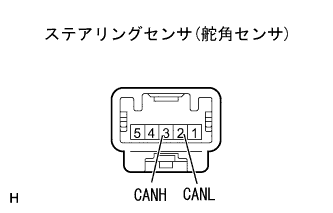 |
Terminals of ECU
| Terminal No. | Terminal Symbol |
|---|---|
| 3 | CANH |
| 2 | CANL |
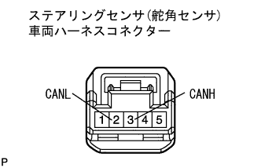 |
Steering Sensor (Steering Angle Sensor) Vehicle Harness Inspection
Turn the IG OFF and disconnect the steering sensor (steering angle sensor) connector.
Using the SST (Toyota electrical tester), measure the resistance between each terminal of the vehicle harness connector.
| Terminal No. (Terminal Symbol) | Condition | Standard |
|---|---|---|
| 3(CANH) ←→ 2(CANL) | IG OFF (Communication Stopped) | 54 to 69 Ω |
| 3(CANH) ←→ GND | IG OFF (Communication Stopped) | 200 Ω or higher |
| 2(CANL) ←→ GND | IG OFF (Communication Stopped) | 200 Ω or higher |
| 3(CANH) ←→ +B | IG OFF (Communication Stopped) | 6 kΩ or higher |
| 2(CANL) ←→ +B | IG OFF (Communication Stopped) | 6 kΩ or higher |
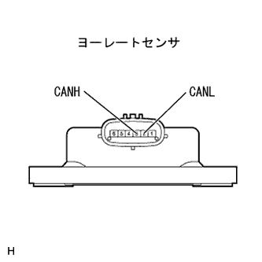 |
Terminals of ECU
| Terminal No. | Terminal Symbol |
|---|---|
| 3 | CANH |
| 2 | CANL |
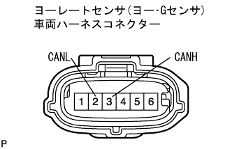 |
Yaw Rate Sensor (Yaw/G Sensor) Vehicle Harness Inspection
Turn the IG OFF and disconnect the yaw rate sensor (yaw/G sensor) connector.
Using the SST (Toyota electrical tester), measure the resistance between each terminal.
| Terminal No. (Terminal Symbol) | Condition | Standard |
|---|---|---|
| 3(CANH) ←→ 2(CANL) | IG OFF (Communication Stopped) | 54 to 69 Ω |
| 3(CANH) ←→ GND | IG OFF (Communication Stopped) | 200 Ω or higher |
| 2(CANL) ←→ GND | IG OFF (Communication Stopped) | 200 Ω or higher |
| 3(CANH) ←→ +B | IG OFF (Communication Stopped) | 6 kΩ or higher |
| 2(CANL) ←→ +B | IG OFF (Communication Stopped) | 6 kΩ or higher |
Terminals of ECU
| Terminal No. | Terminal Symbol |
|---|---|
| H2 | CANH |
| H3 | CANL |
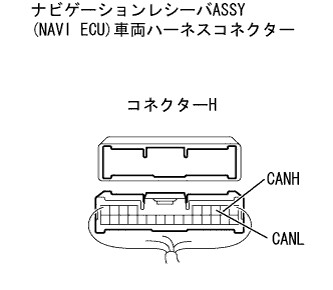 |
Navigation Receiver Assembly (NAVI ECU) Vehicle Harness Inspection
Turn the IG OFF and disconnect connector H of the navigation receiver assembly (NAVI ECU).
Using the SST (Toyota electrical tester), measure the resistance between each terminal of the vehicle harness connector.
| Terminal No. (Terminal Symbol) | Condition | Standard |
|---|---|---|
| H2(CANH) ←→ H3(CANL) | IG OFF (Communication Stopped) | 54 to 69 Ω |
| H2(CANH) ←→ GND | IG OFF (Communication Stopped) | 200 Ω or higher |
| H3(CANL) ←→ GND | IG OFF (Communication Stopped) | 200 Ω or higher |
| H2(CANH) ←→ +B | IG OFF (Communication Stopped) | 6 kΩ or higher |
| H3(CANL) ←→ +B | IG OFF (Communication Stopped) | 6 kΩ or higher |
Terminals of ECU
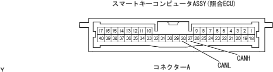
| Terminal No. | Terminal Symbol |
|---|---|
| A27 | CANH |
| A28 | CANL |
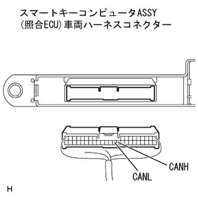 |
Smart Key Computer Assembly (Certification ECU) Vehicle Harness Inspection
Turn the IG OFF and disconnect the smart key computer assembly (Certification ECU) connector.
Using the SST (Toyota electrical tester), measure the resistance between each terminal of the vehicle harness connector.
| Terminal No. (Terminal Symbol) | Condition | Standard |
|---|---|---|
| A27(CANH) ←→ 28(CANL) | IG OFF (Communication Stopped) | 54 to 69 Ω |
| A27(CANH) ←→ GND | IG OFF (Communication Stopped) | 200 Ω or higher |
| A28(CANL) ←→ GND | IG OFF (Communication Stopped) | 200 Ω or higher |
| A27(CANH) ←→ +B | IG OFF (Communication Stopped) | 6 kΩ or higher |
| 28(CANL) ←→ +B | IG OFF (Communication Stopped) | 6 kΩ or higher |
Terminals of ECU
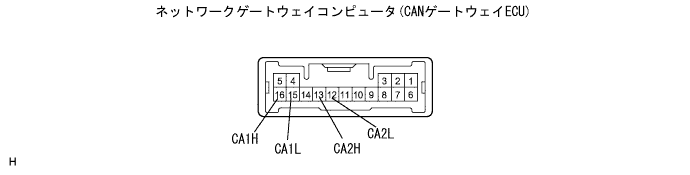
| Terminal No. | Terminal Symbol |
|---|---|
| 16 | CA1H (V Bus Branch Line) |
| 15 | CA1L (V Bus Branch Line) |
| 13 | CA2H (V Bus No.2 Main Line) |
| 12 | CA2L (V Bus No.2 Main Line) |
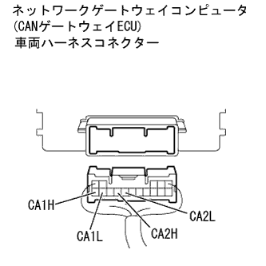 |
Network Gateway Computer (CAN Gateway ECU) Vehicle Harness Inspection
Turn the IG OFF and disconnect the network gateway computer (CAN gateway ECU) connector.
Using the SST (Toyota electrical tester), inspect the resistance between each terminal of the vehicle harness connector.
| Terminal No. (Terminal Symbol) | Condition | Standard |
|---|---|---|
| 16(CA1H) ←→ 15(CA1L) | IG OFF (Communication Stopped) | 54 to 69 Ω |
| 16(CA1H) ←→ GND | IG OFF (Communication Stopped) | 200 Ω or higher |
| 15(CA1L) ←→ GND | IG OFF (Communication Stopped) | 200 Ω or higher |
| 16(CA1H) ←→ +B | IG OFF (Communication Stopped) | 6 kΩ or higher |
| 15(CA1L) - +B | IG OFF (Communication Stopped) | 6 kΩ or higher |
| Terminal No. (Terminal Symbol) | Condition | Standard |
|---|---|---|
| 13(CA2H) ←→ 12(CA2L) | IG OFF (Communication Stopped) | 108 to132 Ω |
| 13(CA2H) ←→ GND | IG OFF (Communication Stopped) | 200 Ω or higher |
| 12(CA2L) ←→ GND | IG OFF (Communication Stopped) | 200 Ω or higher |
| 13(CA2H) ←→ +B | IG OFF (Communication Stopped) | 6 kΩ or higher |
| 12(CA2L) ←→ +B | IG OFF (Communication Stopped) | 6 kΩ or higher |
Terminals of ECU
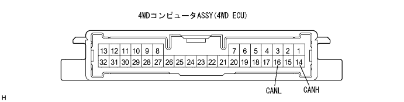
| Terminal No. | Terminal Symbol |
|---|---|
| 14 | CANH |
| 16 | CANL |
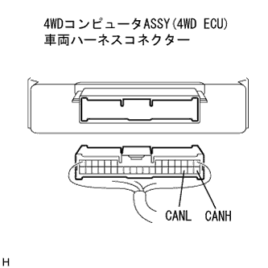 |
4WD Computer Assembly (4WD ECU) Vehicle Harness Inspection
Turn the IG OFF and disconnect the 4WD computer assembly (4WD ECU) connector.
Using SST (Toyota electrical tester), measure the resistance of each terminal of the vehicle harness connector.
| Terminal No. (Terminal Symbol) | Condition | Standard |
|---|---|---|
| 14(CANH) ←→ 16(CANL) | IG OFF (Communication Stopped) | 54 to 69 Ω |
| 14(CANH) ←→ GND | IG OFF (Communication Stopped) | 200 Ω or higher |
| 16(CANL) ←→ GND | IG OFF (Communication Stopped) | 200 Ω or higher |
| 14(CANH) ←→ +B | IG OFF (Communication Stopped) | 6 kΩ or higher |
| 16(CANL) ←→ +B | IG OFF (Communication Stopped) | 6 kΩ or higher |
Terminals of ECU
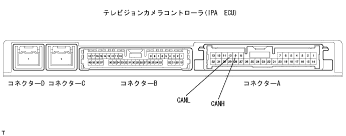
| Terminal No. | Terminal Symbol |
|---|---|
| A9 | CANH |
| A10 | CANL |
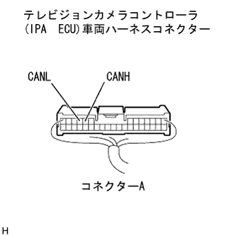 |
Television Camera Controller (IPA ECU) Vehicle Harness Inspection
Turn the IG OFF and disconnect connector A of the television camera controller (IPA ECU).
Using the SST (Toyota electrical tester), inspect the resistance between each terminal of the vehicle harness connector.
| Terminal No. (Terminal Symbol) | Condition | Standard |
|---|---|---|
| A9(CANH) ←→ A10(CANL) | IG OFF (Communication Stopped) | 54 to 69 Ω |
| A9(CANH) ←→ GND | IG OFF (Communication Stopped) | 200 Ω or higher |
| A10(CANL) ←→ GND | IG OFF (Communication Stopped) | 200 Ω or higher |
| A9(CANH) ←→ +B | IG OFF (Communication Stopped) | 6 kΩ or higher |
| A10(CANL) ←→ +B | IG OFF (Communication Stopped) | 6 kΩ or higher |
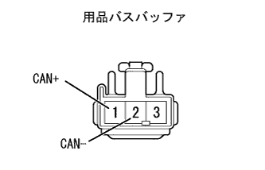 |
Terminals of ECU
| Terminal No. | Terminal Symbol |
|---|---|
| 1 | CAN+ |
| 2 | CAN- |
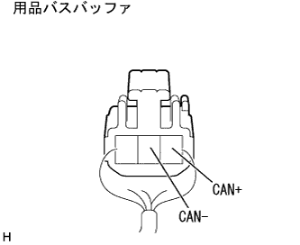 |
Accessory Bus Buffer Vehicle Harness Inspection
Using the SST (Toyota electrical tester), inspect the resistance between each terminal of the vehicle harness connector.
| Terminal No. (Terminal Symbol) | Condition | Standard |
|---|---|---|
| 1(CAN+) ←→ 2(CAN-) | IG OFF (Communication Stopped) | 54 to 69 Ω |
| 1(CAN+) ←→ GND | IG OFF (Communication Stopped) | 200 Ω or higher |
| 2(CAN-) ←→ GND | IG OFF (Communication Stopped) | 200 Ω or higher |
| 1(CAN+) ←→ +B | IG OFF (Communication Stopped) | 6 kΩ or higher |
| 2(CAN-) ←→ +B | IG OFF (Communication Stopped) | 6 kΩ or higher |
Terminals of ECU
| Terminal No. | Terminal Symbol |
|---|---|
| 8 | CANH |
| 9 | CANL |
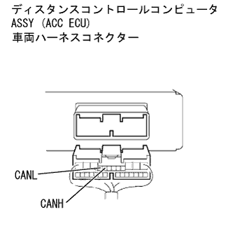 |
Distance Control Computer Assembly (ACC ECU) Vehicle Harness Inspection
Turn the IG OFF and disconnect the distance control computer assembly (ACC ECU) connector.
Using the SST (Toyota electrical tester), measure the resistance between each terminal of the vehicle harness connector.
| Terminal No. (Terminal Symbol) | Condition | Standard |
|---|---|---|
| 8(CANH) ←→ 9(CANL) | IG OFF (Communication Stopped) | 54 to 69 Ω |
| 8(CANH) ←→ GND | IG OFF (Communication Stopped) | 200 Ω or higher |
| 9(CANL) ←→ GND | IG OFF (Communication Stopped) | 200 Ω or higher |
| 8(CANH) ←→ +B | IG OFF (Communication Stopped) | 6 kΩ or higher |
| 9(CANL) ←→ +B | IG OFF (Communication Stopped) | 6 kΩ or higher |
Terminals of ECU
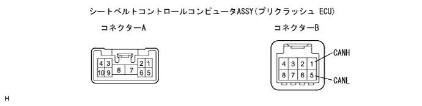
| Terminal No. | Terminal Symbol |
|---|---|
| B1 | CANH |
| B5 | CANL |
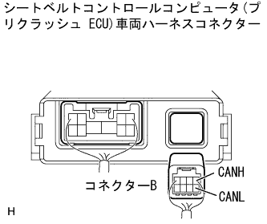 |
Seat Belt Control Computer (Pre-crash ECU) Vehicle Harness Inspection
Turn the IG OFF and disconnect connector B of the seat belt control computer (pre-crash ECU).
Using the SST (Toyota electrical tester), inspect the resistance between each terminal of the vehicle harness connector.
| Terminal No. (Terminal Symbol) | Condition | Standard |
|---|---|---|
| B1(CANH) ←→ B5(CANL) | IG OFF (Communication Stopped) | 54 to 69 Ω |
| B1(CANH) ←→ GND | IG OFF (Communication Stopped) | 200 Ω or higher |
| B5(CANL) ←→ GND | IG OFF (Communication Stopped) | 200 Ω or higher |
| B1(CANH) ←→ +B | IG OFF (Communication Stopped) | 6 kΩ or higher |
| B5(CANL) ←→ +B | IG OFF (Communication Stopped) | 6 kΩ or higher |